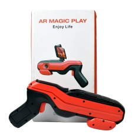
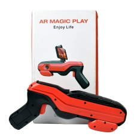

Ttaisykla - 3D Virtualios Realybės (VR) ĮrangaTTaisykla - mobiliųjų telefonų ir kitos technikos servisas
2020.10.29 09:54
Susisiekite su mumis: 863839999
J. Jasinskio g. 7 Vilnius
Paslaugos iPhone taisymas iPad taisymas Mac taisymas Apple Watch Taisymas Telefonų taisymas Telefonų atrišimas Planšečių taisymas Kompiuterių taisymas Duomenų atstatymas Nuotolinių Pultelių Remontas Kitos Technikos Taisymas Įrenginiai ir Aksesuarai Akcijos / Nuolaidos Naujienos Kontaktai Apsauginės kaukės Navigation Paslaugos iPhone taisymas iPad taisymas Mac taisymas Apple Watch Taisymas Telefonų taisymas Telefonų atrišimas Planšečių taisymas Kompiuterių taisymas Duomenų atstatymas Nuotolinių Pultelių Remontas Kitos Technikos Taisymas Įrenginiai ir Aksesuarai Akcijos / Nuolaidos Naujienos Kontaktai Apsauginės kaukėsVirtualios Realybės Įranga
3D Virtualios realybės akiniai VR BOX 2.0
Tinka 3D žaidimams ir filmams, palaiko Android ir Apple iOS platformas. Skirtas įrenginiams su 4,5 - 6 colių ekranais. Platesnis nei įprasta matymo kampas (95 - 100°). Akiniuose įmontuota daug pažangių funkcijų, tokių kaip greitas telefono montavimo rėmelis, vėdinimo angos, atskirai atidaromas dangtelis leidžiantis naudoti telefono kamerą. Reguliuojamas židinio nuotolis ir lęšiai leis pritaikyti Virtualios realybės akinius bet kuriam žmogui, o safyro tiklas užtikrina akių apsaugą nuo arti esančio mobilaus įrenginio spinduliavimo. Patogus diržas mažina apkrovą tenkančią galvai. Didžiausias palaikomas mobilusis įrenginys: 163mm ilgio, 83mm pločio. Nemokamos programėlės, kurias galite rasti „App Store“ ir „Google Play“ parduotuvėse: „Cardboard“ ir „3D Split Screen“.
Kaina: 15€
3D Virtualios realybės akiniai VR BOX SPVR-02
3D Virtualios realybės akiniai "VR BOX SPVR-02" skirti 3D žaidimams ir filmams. Tinka beveik visų išmaniųjų telefonų modeliams, naudojantiems tiek „Android“, tiek „iOS“ operacines sistemas. Telefonų ekrano įstrižainė turi būti nuo 4,5 iki 6,0 colių. Lengvai įdėsite savo išmanųjį telefoną atidarę akinių priekinį dangtį ir specialiais laikikliais pritvirtinę jį akinių viduje. Akiniai tvirtinami ant galvos su lanksčia ir reguliuojama juostele. Dėl įmontuotų sferinių lęšių, su šiais akiniais nejausite nuovargio ir galvos svaigimo net besinaudodami jais ilgą laiką. Paprastai reguliuojamas akių atstumas bei lęšio padėtis užtikrina geriausios kokybės vaizdą. VR BOX SPVR-02 turi specialią angą ausinėms ar telefono įkrovimo kabeliui, leisiančiais mėgautis virtualia realybe neribotą laiką.
Kaina: 20€
Bluetooth valdymo pultas 3D virtualios realybės akiniams SPBC-01
Palaiko Android ir iOS platformas. Baltos spalvos.
Kaina: 10€
Bluetooth valdymo pultas 3D virtualios realybės akiniams SPBC-0
Palaiko Android ir iOS platformas. Juodos spalvos.
Kaina: 10€
Išsikvieskite kurjerį nemokamai!
Spausk ir registruok iškvietimą
Turite klausimų? Susisiekite su mumis!
Jūsų el. paštas* Jūsų vardas* Jūsų klausimas*Siųsti
Iphone Repair WordPress theme | Login
- VIRTUALIOS REALYBĖS PRAMOGA - VR SPOT
- Virtualios realybes įranga Archives - Virtuali erdvė | VR City
- Virtualios Realybės Įranga - TTAISYKLA
- VRERDVĖ.LT - Virtualios Realybės Pramogos Kaune
- Interaktyvi virtualios realybės kelionė po Čiurlionio ...
- Interaktyvi virtualios realybės instaliacija „Angelų takais“
- Virtualios realybės šalmas ps4: peržiūri, kaip prisijungti ...
- Virtualios realybės (VR) įranga internetu – TECHNORAMA
- Virtualios realybės istorija - VR City
- VIRTUALIOS REALYBĖS AKINIAI (VR) virš 50 modelių Žema ...
- VIRTUALIOS REALYBĖS PRAMOGA - VR SPOT
Maža to, dabar virtualios realybės akiniai nereikalauja didelių finansinių investicijų, nes įsigyti šį įrenginį galima už mažiau nei 15 €. Siūlome patikimų gamintojų kokybiškus virtualios realybės akinius. Čia rasite Samsung, Sponge, Esperanza, Modecom ir kitų prekės ženklų virtualios realybės akinių modelius.
- Virtualios realybes įranga Archives - Virtuali erdvė | VR City
Palygink skirtingų parduotuvių kainas Nuo 10.00 € Virtualios realybės įranga Akcijos, atsiliepimai.
- Virtualios Realybės Įranga - TTAISYKLA
Pasinerkite į virtualų pasaulį. Virtualios realybės (VR) įrangos komplektai kompiuteriams, žaidimų konsolėms ir mobiliesiems įrenginiams. Geros kainos!
- VRERDVĖ.LT - Virtualios Realybės Pramogos Kaune
Virtualios realybės akinių nuoma renginiams, konferencijoms, šventėms. Išsinuomokite virtualios realybės akinius su reikiama įranga ir virtualios realybės žaidimais Vilniuje. Galėsite išandyti įvairaus pobūdžio žaidimų bei kitų VR patirčių. Nuomojami HTC Vive virtualios realybės akiniai.
- Interaktyvi virtualios realybės kelionė po Čiurlionio ...
Virtualios realybės įranga galima naudotis nuo 12 m. Bilieto kaina 10 eurų. Moksleiviams, studentams ir senjorams taikoma 50% nuolaida. Asmenys virš 80 m. amžiaus ir neįgalieji leidžiami nemokamai. Filmo trukmė - 20 min. Seansai vyksta kas pusvalandį.
- Interaktyvi virtualios realybės instaliacija „Angelų takais“
Atrodo aišku, kad 2016 m. Virtualios realybės pramonėje bus svarbūs metai. Tuo metu rinkoje pasirodys keletas vartotojų prietaisų, kurie atrodo, kad galiausiai atsakys į neįvykdytus virtualios realybės pažadus devintajame dešimtmetyje. Tai apima novatorišką "Oculus Rift", kurią 2014 m.
- Virtualios realybės šalmas ps4: peržiūri, kaip prisijungti ...
Pradžia / Virtualios realybes įranga ... Patirk naują pasaulį virtualios realybės patirčių kambaryje Saulėtekyje esančiame studentų miestelyje | Saulėtekio al. 41, Vilnius. Taisyklės. Apmokėjimo būdai. Privatumo politika. Prekių ir paslaugų teikimo sąlygos.
- Virtualios realybės (VR) įranga internetu – TECHNORAMA
Instaliaciją sudaro keturios virtualios realybės įrangos stotelės, vienu metu viena stotele gali naudotis vienas žmogus. Filmo trukmė 20 min. Seansai vyksta kas pusvalandį. Virtualios realybės įranga galima naudotis nuo 12 m. Bilieto kaina 10 eurų. Moksleiviams, studentams ir senjorams taikoma 50% nuolaida.
- Virtualios realybės istorija - VR City
Virtualios Realybės Įranga. 3D Virtualios realybės akiniai VR BOX 2.0. Tinka 3D žaidimams ir filmams, palaiko Android ir Apple iOS platformas. Skirtas įrenginiams su 4,5 - 6 colių ekranais. Platesnis nei įprasta matymo kampas (95 - 100°). Akiniuose įmontuota daug pažangių funkcijų, tokių kaip greitas telefono montavimo rėmelis ...
- VIRTUALIOS REALYBĖS AKINIAI (VR) virš 50 modelių Žema ...
Virtualios realybės įranga į namus. ... Virtualios realybės nuotykius galite patirti atvykę į mūsų virtualų kambarį, kuris yra pirmasis ir didžiausias Klaipėdoje, arba užsisakyti visą įrangą į savo namus ar kitą pasirinktą šventęs vietą. Įrangos nuoma parai.
Maža to, dabar virtualios realybės akiniai nereikalauja didelių finansinių investicijų, nes įsigyti šį įrenginį galima už mažiau nei 15 €. Siūlome patikimų gamintojų kokybiškus virtualios realybės akinius. Čia rasite Samsung, Sponge, Esperanza, Modecom ir kitų prekės ženklų virtualios realybės akinių modelius.
Palygink skirtingų parduotuvių kainas Nuo 10.00 € Virtualios realybės įranga Akcijos, atsiliepimai.
Pasinerkite į virtualų pasaulį. Virtualios realybės (VR) įrangos komplektai kompiuteriams, žaidimų konsolėms ir mobiliesiems įrenginiams. Geros kainos!
Virtualios realybės akinių nuoma renginiams, konferencijoms, šventėms. Išsinuomokite virtualios realybės akinius su reikiama įranga ir virtualios realybės žaidimais Vilniuje. Galėsite išandyti įvairaus pobūdžio žaidimų bei kitų VR patirčių. Nuomojami HTC Vive virtualios realybės akiniai.
Virtualios realybės įranga galima naudotis nuo 12 m. Bilieto kaina 10 eurų. Moksleiviams, studentams ir senjorams taikoma 50% nuolaida. Asmenys virš 80 m. amžiaus ir neįgalieji leidžiami nemokamai. Filmo trukmė - 20 min. Seansai vyksta kas pusvalandį.
Atrodo aišku, kad 2016 m. Virtualios realybės pramonėje bus svarbūs metai. Tuo metu rinkoje pasirodys keletas vartotojų prietaisų, kurie atrodo, kad galiausiai atsakys į neįvykdytus virtualios realybės pažadus devintajame dešimtmetyje. Tai apima novatorišką "Oculus Rift", kurią 2014 m.
Pradžia / Virtualios realybes įranga ... Patirk naują pasaulį virtualios realybės patirčių kambaryje Saulėtekyje esančiame studentų miestelyje | Saulėtekio al. 41, Vilnius. Taisyklės. Apmokėjimo būdai. Privatumo politika. Prekių ir paslaugų teikimo sąlygos.
Instaliaciją sudaro keturios virtualios realybės įrangos stotelės, vienu metu viena stotele gali naudotis vienas žmogus. Filmo trukmė 20 min. Seansai vyksta kas pusvalandį. Virtualios realybės įranga galima naudotis nuo 12 m. Bilieto kaina 10 eurų. Moksleiviams, studentams ir senjorams taikoma 50% nuolaida.
Virtualios Realybės Įranga. 3D Virtualios realybės akiniai VR BOX 2.0. Tinka 3D žaidimams ir filmams, palaiko Android ir Apple iOS platformas. Skirtas įrenginiams su 4,5 - 6 colių ekranais. Platesnis nei įprasta matymo kampas (95 - 100°). Akiniuose įmontuota daug pažangių funkcijų, tokių kaip greitas telefono montavimo rėmelis ...
Virtualios realybės įranga į namus. ... Virtualios realybės nuotykius galite patirti atvykę į mūsų virtualų kambarį, kuris yra pirmasis ir didžiausias Klaipėdoje, arba užsisakyti visą įrangą į savo namus ar kitą pasirinktą šventęs vietą. Įrangos nuoma parai.
 
